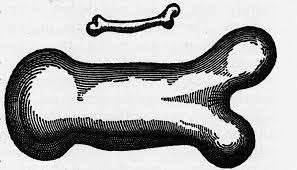

Engineering Principles III:
Scaling Up
Dr Shane V Crowley
Press down for controls and right to progress
Different Scales
- Lab ($1mL \rightarrow 1000 mL$)
- Pilot ($1L \rightarrow 10 L$)
- Factory ($1000L +$)
Scaling Up is Difficult: responses
- Mystical: "things are just different in the lab"
- Heuristics: "it's fine if we use this one tank"
- Optimiser: "just focus on what we're good at"
Premature Optimisation
$\color{orange}\diamond \ (\color{aqua}{local_{MAX}} < \ \color{violet}{global_{MIN}})$
Questions for a graduate: (1) Do you have new ideas? (2) Will they scale up?
Consider these. . .

- Giants don't exist
- Kids are pretty strong
- Elephants have large ears
- Industrial scale up is hard
Galileo discovered scaling laws. Take two cubes, one where each side has a length of $1 \ m$ and another where the length is $2 \ m$. With this doubling of length how does the volume change?
Scaling Laws
Galileo (yes that one) wrote the square-cube law:
$$A_2 = A_1(\frac{l_2}{l_1})^2$$ $$V_2 = V_1(\frac{l_2}{l_1})^3$$
For a material with constant density, an increase in size $[L]$ corresponds to an increase in weight $[L^3]$ that is the cube of that increase, but only a squared increase in area $[L^2]$.
Some Consequences
- Larger vessels needs structural reinforcement
- Larger vessels are more difficult to heat/cool
- Larger vessels holds heat more efficiently
If it works, scale up is often worth the investment
Small (s) predicts big(b) if . . . .
- Geometric similarity ($L_{s1}/L_{s2} = L_{b1}/L_{b2}$)
- Kinematic similarity ($v_{s1}/v_{s2} = v_{b1}/v_{b1})$
- Dynamic similarity ($F_{s1}/F_{s2} = F_{b1}/F_{b2}$)
Two systems have similtude if they share these similarities
Example: your new process
You have made a valuable new ingredient in the lab. An engineer asks you how the new plant reactor should be designed based on your work. He specifically asks for information regarding vessel size and agitation rates
Example: your new process
-
At a minimum you must maintain:
- ratio of vessel diameter to height
- the regime of turbulence
- the tip velocity of the mixer
- ... and (potentially) balances of frictional forces
$\color{orange}{Re = \frac{N \cdot D^2 \cdot \rho}{\mu}}$ and $\color{orange}{v = \pi \cdot D \cdot N}$
That's it for now
We will return to more specific scaling problems when we look at processes like mixing
Next lecture
Hydrostatics
shane.crowley@ucc.ie